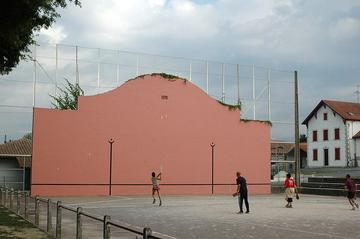
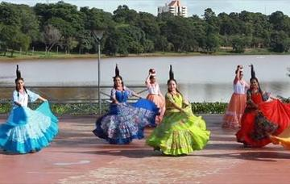
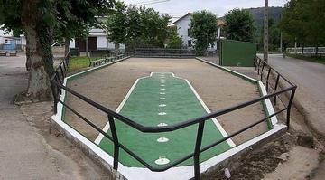
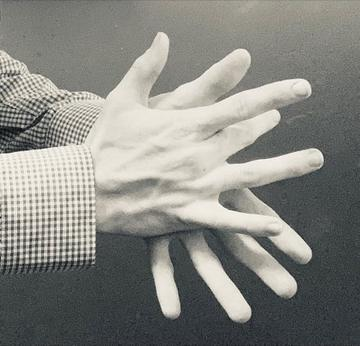

Home / River Valleys and First Cities / Shared across the world
Encyclopedia ID 4485
Alquerque
Also known as Alquerque de doce
Alquerque is a board game of capture played on a grid of 25 points joined by lines, and it is one of the ancestors of draughts. The name comes from the Arabic al-qirkat. It was widely played across Spain and North Africa in the Middle Ages and was described in Alfonso X of Castile's Book of Games, compiled in 1283, which shows the game of twelve pieces a side. Some scholars suggest its roots lie in the ancient Middle East, but there is no reliable dating.
How it is played
Each player has twelve pieces, which start on opposite halves of the board with the centre point empty. On a turn, a piece steps along a line to an adjacent empty point, forward or sideways but never backward. A piece captures by jumping over an adjacent enemy piece, in any direction along a line, into the empty point beyond and removing it, and multiple jumps may be chained. Capture is compulsory, and the player who captures all of the opponent's pieces or leaves them with no move wins.
Heritage note
Alquerque boards were scratched into floors, steps and the lids of chests, and played with pebbles and shells by anyone who could draw a few lines. After the Moors came to Spain, the game spread into the rest of Europe, and when players began using chess boards for alquerque with pieces on dark squares only, the result was draughts, in the twelfth century. The game still survives in Spain and the Maghreb in its original form, and the 25-point board can be found in several places as a quiet reminder of the journeys of a game between three continents.
Origins
Recorded in the Arab world from the 10th century and in Spain from the 13th century; surviving boards across Spain and North Africa show a long tradition.
Available in Arcforge
Try a 90-second preview in your browser Google Play App Store
Sources
Related entries


More from Spain


Bottle Dance
Paraguay +1 · Dances
Cantabrian palm bowling
Spain · Street and playground games

Dry Stone Wall Builder
Croatia +4 · Crafts and making